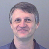

Interoperable Technologies for Advanced Petascale Simulations (ITAPS) Team
The Interoperable Technologies for Advanced Petascale Simulations center comprises researchers from nine institutions including six DOE laboratories (Argonne, Brookhaven, Lawrence Livermore, Oak Ridge, Pacific Northwest, and Sandia) and three universities (Rensselaer Polytechnic Institute SUNY Stony Brook, and University of British Columbia). The PI of the ITAPS center is Lori Diachin (LLNL) who is supported by an executive committee consisting of the technical leads for each area of research and the institutional points of contact.
ITAPS Institutional Roles
Brookhaven National Laboratory. Brookhaven works with accelerator and fusion scientists, parallel AMR front tracking, conservative front tracking, and interface definition.
Lawrence Livermore National Laboratory. LLNL works on parallel mesh quality improvement tools, compatibility with VisIt, mesh I/O, mesh-to-mesh transfer, and parallel mesh interface definition. LLNL works with accelerator and fusion scientists.
Oak Ridge National Laboratory. ORNL works with climate scientists, on parallel mesh-to-mesh transfer, parallel AMR
Pacific Northwest National Laboratory. PNNL works with groundwater application scientists and work on parallel mesh generation and adaptivity combined with front tracking
Rensselear Polytechnic Institute. RPI collaborates with accelerator and fusion scientists, and work on parallel solution adaptive loops, dynamic services, parallel mesh and field interface, and mesh-to-mesh transfer.
Sandia National Laboratories. SNL works on the parallel mesh interface, mesh quality improvement algorithms and software, and partitioning services
State University of New York, Stony Brook. SUNY Stony Brook collaborates with fusion and groundwater scientists, and work on parallel AMR front tracking and the mesh and geometry interfaces
University of British Columbia. UBC works on parallel mesh generation and swapping algorithms and the parallel mesh and field interface.
| Name | Institution | Expertise | |
| Ed D'Azevedo ORNL |
e6d@ornl.gov | Mesh generation | |
| Karen Devine SNL |
kddevin@sandia.gov | Partitioning Algorithms | |
| Lori Diachin (PI) LLNL |
diachin2@llnl.gov | Mesh quality improvement | |
Jim Glimm BNL/SUNY SB |
glimm@ams.sunysb.edu | Front-tracking | |
| Ken Jansen U/ Colorado |
Kenneth.Jansen@Colorado.EDU | Adaptive Mesh, discretization, HPC Algs | |
| Ahmed Khamayseh ORNL |
khamaysehak@ornl.gov | Mesh generation and quality, mesh-to-mesh transfer | |
|  | Patrick Knupp SNL |
pknupp@sandia.gov | Mesh quality improvement |
| Jason Kraftcheck U. Wisconsin (ANL) |
kraftche@cae.wisc.edu | Software design, mesh quality improvement | |
| Vitus Leung SNL |
vjleung@sandia.gov | Partitioning | |
| Xiaolin Li SUNY SB |
linli@ams.sunysb.edu | Front-tracking | |
|
Mark Miller LLNL |
miller86@llnl.gov | Mesh file formats, visualization | |
| Carl Ollivier-Gooch UBC |
cfog@mech.ubc.ca | Mesh generation, swapping, discretization, software eng | |
| Roman Samulyak BNL |
rosamu@bnl.gov | Front-tracking, discretization | |
| Mark Shephard RPI |
shephard@scorec.rpi.edu | Adaptive and high order meshes, CAD geom, HPC algs | |
| Tim Tautges ANL |
tautges@mcs.anl.gov | Mesh generation, CAD geom, software engineering | |
| Harold Trease PNNL |
het@pnl.gov | Mesh generation, HPC algs, discretization |